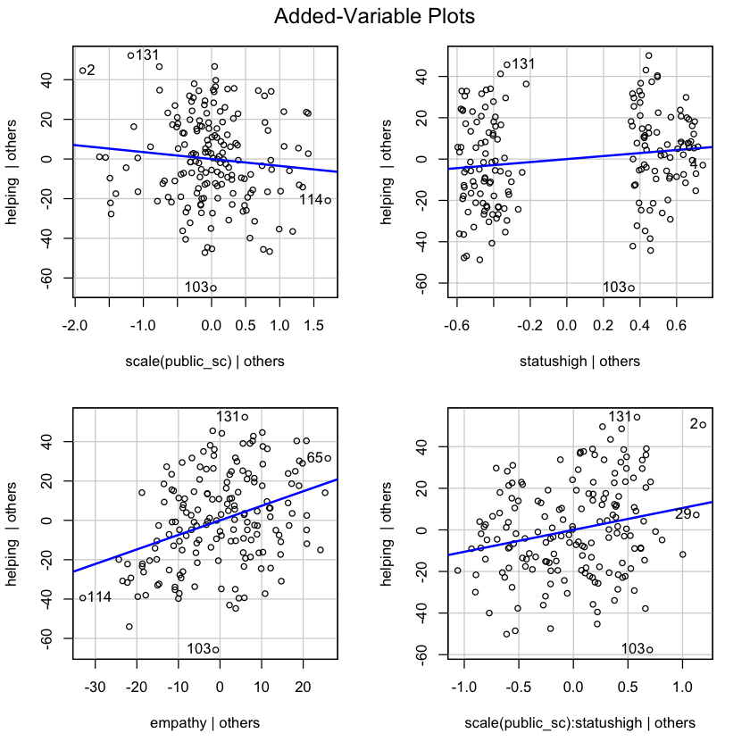
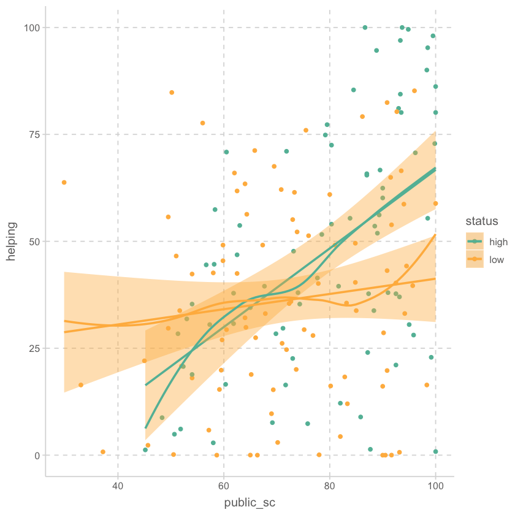

helping <- read_csv("data/altruism_full.csv")Analysis I
Applied Multiple Regression/Correlation Analysis for the Behavioral by Jacob Cohen, Patricia Cohen, Stephen G. West, Leona S. AikenSciences
helping <- helping |>
mutate(
status = factor(status, levels = c("low", "high")),
sex = factor(sex)
)
helping |> print()# A tibble: 168 × 6
id status sex empathy public_sc helping
<dbl> <fct> <fct> <dbl> <dbl> <dbl>
1 1 high female 58.1 88.3 33.8
2 2 low female 43.9 29.8 63.8
3 3 low female 76.8 80 61.0
4 6 high male 42.6 45.2 1.23
5 8 low male 80.6 52 20.8
6 9 high male 44.2 69.2 7.61
# … with 162 more rowssummary(mod <- lm(helping ~ public_sc * status + empathy, data = helping))
Call:
lm(formula = helping ~ public_sc * status + empathy, data = helping)
Residuals:
Min 1Q Median 3Q Max
-65.117 -14.950 -1.137 15.982 48.022
Coefficients:
Estimate Std. Error t value Pr(>|t|)
(Intercept) -0.3143 11.9954 -0.026 0.97913
public_sc -0.2133 0.1689 -1.263 0.20849
statushigh -40.9460 17.0374 -2.403 0.01737 *
empathy 0.7392 0.1510 4.895 2.35e-06 ***
public_sc:statushigh 0.6423 0.2203 2.916 0.00405 **
---
Signif. codes: 0 ‘***’ 0.001 ‘**’ 0.01 ‘*’ 0.05 ‘.’ 0.1 ‘ ’ 1
Residual standard error: 22.68 on 163 degrees of freedom
Multiple R-squared: 0.293, Adjusted R-squared: 0.2756
F-statistic: 16.88 on 4 and 163 DF, p-value: 1.335e-11summary(mod <- lm(helping ~ scale(public_sc) * status + empathy, data = helping))
Call:
lm(formula = helping ~ scale(public_sc) * status + empathy, data = helping)
Residuals:
Min 1Q Median 3Q Max
-65.117 -14.950 -1.137 15.982 48.022
Coefficients:
Estimate Std. Error t value Pr(>|t|)
(Intercept) -16.3357 11.1328 -1.467 0.14421
scale(public_sc) -3.4988 2.7708 -1.263 0.20849
statushigh 7.3082 3.5847 2.039 0.04310 *
empathy 0.7392 0.1510 4.895 2.35e-06 ***
scale(public_sc):statushigh 10.5379 3.6139 2.916 0.00405 **
---
Signif. codes: 0 ‘***’ 0.001 ‘**’ 0.01 ‘*’ 0.05 ‘.’ 0.1 ‘ ’ 1
Residual standard error: 22.68 on 163 degrees of freedom
Multiple R-squared: 0.293, Adjusted R-squared: 0.2756
F-statistic: 16.88 on 4 and 163 DF, p-value: 1.335e-11library(car)
avPlots(mod)
summary(lm(scale(helping) ~ status, data = helping))
Call:
lm(formula = scale(helping) ~ status, data = helping)
Residuals:
Min 1Q Median 3Q Max
-1.73766 -0.70655 -0.09683 0.73752 1.98321
Coefficients:
Estimate Std. Error t value Pr(>|t|)
(Intercept) -0.1922 0.1041 -1.846 0.06662 .
statushigh 0.4086 0.1518 2.692 0.00782 **
---
Signif. codes: 0 ‘***’ 0.001 ‘**’ 0.01 ‘*’ 0.05 ‘.’ 0.1 ‘ ’ 1
Residual standard error: 0.9818 on 166 degrees of freedom
Multiple R-squared: 0.04184, Adjusted R-squared: 0.03607
F-statistic: 7.25 on 1 and 166 DF, p-value: 0.007819summary(lm(scale(helping) ~ empathy, data = helping))
Call:
lm(formula = scale(helping) ~ empathy, data = helping)
Residuals:
Min 1Q Median 3Q Max
-2.01691 -0.65267 -0.03413 0.62921 2.02464
Coefficients:
Estimate Std. Error t value Pr(>|t|)
(Intercept) -2.296418 0.329699 -6.965 7.31e-11 ***
empathy 0.031909 0.004484 7.117 3.16e-11 ***
---
Signif. codes: 0 ‘***’ 0.001 ‘**’ 0.01 ‘*’ 0.05 ‘.’ 0.1 ‘ ’ 1
Residual standard error: 0.878 on 166 degrees of freedom
Multiple R-squared: 0.2338, Adjusted R-squared: 0.2292
F-statistic: 50.65 on 1 and 166 DF, p-value: 3.158e-11summary(lm(scale(helping) ~ empathy + status, data = helping))
Call:
lm(formula = scale(helping) ~ empathy + status, data = helping)
Residuals:
Min 1Q Median 3Q Max
-2.13949 -0.61254 -0.07061 0.60338 1.99294
Coefficients:
Estimate Std. Error t value Pr(>|t|)
(Intercept) -2.349779 0.326929 -7.187 2.17e-11 ***
empathy 0.030721 0.004467 6.878 1.20e-10 ***
statushigh 0.295364 0.135204 2.185 0.0303 *
---
Signif. codes: 0 ‘***’ 0.001 ‘**’ 0.01 ‘*’ 0.05 ‘.’ 0.1 ‘ ’ 1
Residual standard error: 0.8682 on 165 degrees of freedom
Multiple R-squared: 0.2553, Adjusted R-squared: 0.2463
F-statistic: 28.29 on 2 and 165 DF, p-value: 2.735e-11summary(mod2 <- lm(helping ~ scale(public_sc) * status, data = helping))
Call:
lm(formula = helping ~ scale(public_sc) * status, data = helping)
Residuals:
Min 1Q Median 3Q Max
-65.885 -16.726 -0.607 17.828 52.431
Coefficients:
Estimate Std. Error t value Pr(>|t|)
(Intercept) 43.864 2.793 15.703 < 2e-16 ***
scale(public_sc) 15.077 2.824 5.339 3.07e-07 ***
statuslow -7.042 3.827 -1.840 0.06757 .
scale(public_sc):statuslow -12.154 3.842 -3.163 0.00186 **
---
Signif. codes: 0 ‘***’ 0.001 ‘**’ 0.01 ‘*’ 0.05 ‘.’ 0.1 ‘ ’ 1
Residual standard error: 24.22 on 164 degrees of freedom
Multiple R-squared: 0.189, Adjusted R-squared: 0.1742
F-statistic: 12.74 on 3 and 164 DF, p-value: 1.581e-07anova(mod2, mod) |> print()Analysis of Variance Table
Model 1: helping ~ scale(public_sc) * status
Model 2: helping ~ scale(public_sc) * status + empathy
Res.Df RSS Df Sum of Sq F Pr(>F)
1 164 96189
2 163 83862 1 12327 23.96 2.348e-06 ***
---
Signif. codes: 0 ‘***’ 0.001 ‘**’ 0.01 ‘*’ 0.05 ‘.’ 0.1 ‘ ’ 1helping |>
ggplot(aes(x = public_sc, y = helping, color = status)) +
geom_point() +
geom_smooth(method = lm) +
geom_smooth(se = FALSE)
library(psych)
# R squared
corr.test(helping |> select(empathy:helping))$r^2 |>
round(2) |>
print() empathy public_sc helping
empathy 1.00 0.41 0.23
public_sc 0.41 1.00 0.12
helping 0.23 0.12 1.00summary(lm(helping ~ scale(empathy) * scale(public_sc), data = helping))
Call:
lm(formula = helping ~ scale(empathy) * scale(public_sc), data = helping)
Residuals:
Min 1Q Median 3Q Max
-58.326 -16.613 -0.074 16.524 53.692
Coefficients:
Estimate Std. Error t value Pr(>|t|)
(Intercept) 39.644 2.070 19.151 < 2e-16 ***
scale(empathy) 12.013 2.346 5.121 8.42e-07 ***
scale(public_sc) 2.301 2.361 0.975 0.3312
scale(empathy):scale(public_sc) 2.735 1.620 1.688 0.0932 .
---
Signif. codes: 0 ‘***’ 0.001 ‘**’ 0.01 ‘*’ 0.05 ‘.’ 0.1 ‘ ’ 1
Residual standard error: 23.3 on 164 degrees of freedom
Multiple R-squared: 0.2495, Adjusted R-squared: 0.2358
F-statistic: 18.17 on 3 and 164 DF, p-value: 3.138e-10summary(lm(helping ~ scale(empathy) * scale(public_sc) + scale(public_sc) * status, data = helping))
Call:
lm(formula = helping ~ scale(empathy) * scale(public_sc) + scale(public_sc) *
status, data = helping)
Residuals:
Min 1Q Median 3Q Max
-66.40 -14.81 -1.10 16.81 48.70
Coefficients:
Estimate Std. Error t value Pr(>|t|)
(Intercept) 43.100 2.853 15.109 < 2e-16 ***
scale(empathy) 11.387 2.298 4.956 1.8e-06 ***
scale(public_sc) 6.951 3.116 2.231 0.02706 *
statuslow -6.980 3.603 -1.937 0.05445 .
scale(empathy):scale(public_sc) 1.531 1.621 0.944 0.34637
scale(public_sc):statuslow -9.815 3.695 -2.656 0.00869 **
---
Signif. codes: 0 ‘***’ 0.001 ‘**’ 0.01 ‘*’ 0.05 ‘.’ 0.1 ‘ ’ 1
Residual standard error: 22.69 on 162 degrees of freedom
Multiple R-squared: 0.2968, Adjusted R-squared: 0.2751
F-statistic: 13.68 on 5 and 162 DF, p-value: 3.876e-11summary(lm(helping ~ status, data = helping))
Call:
lm(formula = helping ~ status, data = helping)
Residuals:
Min 1Q Median 3Q Max
-46.31 -18.83 -2.58 19.66 52.85
Coefficients:
Estimate Std. Error t value Pr(>|t|)
(Intercept) 47.147 2.944 16.016 < 2e-16 ***
statuslow -10.890 4.045 -2.692 0.00782 **
---
Signif. codes: 0 ‘***’ 0.001 ‘**’ 0.01 ‘*’ 0.05 ‘.’ 0.1 ‘ ’ 1
Residual standard error: 26.17 on 166 degrees of freedom
Multiple R-squared: 0.04184, Adjusted R-squared: 0.03607
F-statistic: 7.25 on 1 and 166 DF, p-value: 0.007819